<!DOCTYPE lake>
<h1 data-lake-id="vTMTE" id="vTMTE"><span data-lake-id="u7162bc77" id="u7162bc77" style="color: rgb(51, 51, 51)">串口连接</span></h1><h2 data-lake-id="N9f5v" id="N9f5v"><span data-lake-id="u8e32d84d" id="u8e32d84d" style="color: rgb(51, 51, 51)">接线方式</span></h2><p data-lake-id="ufe13b569" id="ufe13b569"><span class="lake-fontsize-12" data-lake-id="u8f6274d3" id="u8f6274d3" style="color: rgb(51, 51, 51)">泰山派并不像之前的STC8核心板集成CH340， 所以需要外部提供一个USB转串口的设备作为中转，这样才能连接上。有两种方式： 一种是使用串口烧录工具连接， 另一种是使用STC8核心板连接</span></p><p data-lake-id="u46972cc5" id="u46972cc5"><span class="lake-fontsize-12" data-lake-id="u16977fbf" id="u16977fbf" style="color: rgb(51, 51, 51)">​</span><br/></p><p data-lake-id="uc200aee0" id="uc200aee0">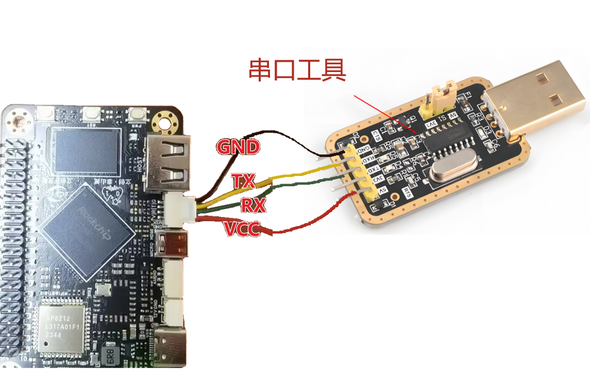</p><h3 data-lake-id="CkACT" id="CkACT"><span data-lake-id="u90ca7639" id="u90ca7639" style="color: rgb(51, 51, 51)">串口烧录工具连接</span></h3><p data-lake-id="ub3be238b" id="ub3be238b"><span class="lake-fontsize-12" data-lake-id="ua899c335" id="ua899c335" style="color: rgb(51, 51, 51)">如果有串口烧录工具，那么可以使用串口烧录工具来连接泰山派，使用GH1.25带锁头4PIN线接入泰山派的Debug调试串口，另外一头接入串口烧录工具。具体接入办法为（</span><strong><span class="lake-fontsize-12" data-lake-id="u4e3bdf21" id="u4e3bdf21" style="color: rgb(51, 51, 51)">单独使用Type-C给泰山派供电</span></strong><span class="lake-fontsize-12" data-lake-id="u25a5152a" id="u25a5152a" style="color: rgb(51, 51, 51)">）：</span></p><span class="yuque-card-unsupported">[codeblock]</span><h3 data-lake-id="WJrgz" id="WJrgz"><span data-lake-id="u16e9c02b" id="u16e9c02b" style="color: rgb(51, 51, 51)">STC8核心板连接</span></h3><p data-lake-id="ufc4cf584" id="ufc4cf584"><span class="lake-fontsize-12" data-lake-id="u9bf8778c" id="u9bf8778c" style="color: rgb(51, 51, 51)">如果没有串口烧录工具，那么也可以使用STC8核心板来连接泰山派（由于STC8核心板有CH340），不过由于在STC8的线路设计时，已经把CH340的 RXD接到了 STC8H8K的 TXD ，把CH340的TXD接到了STC8H8K的RXD 上了，并且由于STC8核心板输出的电源只有所以此时接入泰山派的接入方式稍微有点改变，具体如下</span><strong><span class="lake-fontsize-12" data-lake-id="uc5997462" id="uc5997462" style="color: rgb(51, 51, 51)">（单独使用Type-C给泰山派供电</span></strong><span class="lake-fontsize-12" data-lake-id="u731f6126" id="u731f6126" style="color: rgb(51, 51, 51)">）：</span></p><p data-lake-id="uc6faba2f" id="uc6faba2f">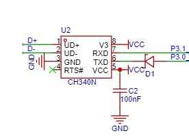</p><span class="yuque-card-unsupported">[codeblock]</span><p data-lake-id="u6847c78a" id="u6847c78a">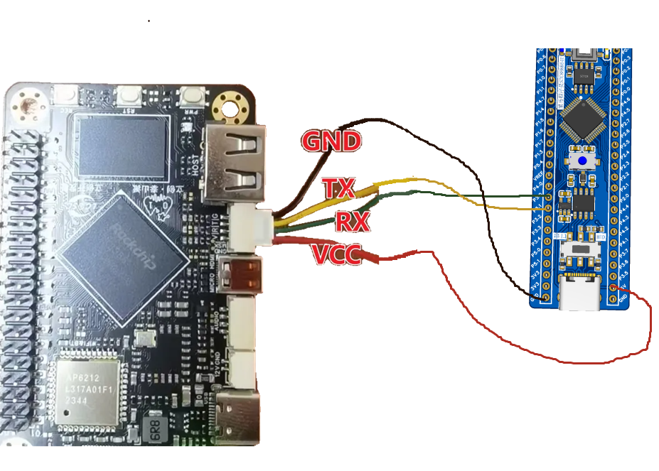</p><h2 data-lake-id="iFpdH" id="iFpdH"><span data-lake-id="u57c246dd" id="u57c246dd" style="color: rgb(51, 51, 51)">串口连接泰山派</span></h2><p data-lake-id="uf3330946" id="uf3330946"><span class="lake-fontsize-12" data-lake-id="u3e0ce873" id="u3e0ce873" style="color: rgb(51, 51, 51)">泰山派其实可以看成是一台小型电脑，麻雀虽小五脏俱全，我们要想在windows下操作它，则需要安装远程连接工具，此处推荐使用</span><strong><span class="lake-fontsize-12" data-lake-id="ud6730a51" id="ud6730a51" style="color: rgb(51, 51, 51)">MobaXterm</span></strong><span class="lake-fontsize-12" data-lake-id="u1565c76c" id="u1565c76c" style="color: rgb(51, 51, 51)"> 链接。</span></p><h3 data-lake-id="CuFTU" id="CuFTU"><span data-lake-id="ud05bad32" id="ud05bad32" style="color: rgb(51, 51, 51)">查看串口编号</span></h3><p data-lake-id="u4c77796a" id="u4c77796a"><span class="lake-fontsize-12" data-lake-id="ud004d06c" id="ud004d06c" style="color: rgb(51, 51, 51)">打开电脑的设备管理器，然后查看端口的名字</span></p><p data-lake-id="ufdce08da" id="ufdce08da"><span class="lake-fontsize-12" data-lake-id="ud6b530aa" id="ud6b530aa" style="color: rgb(51, 51, 51)">​</span><br/></p><p data-lake-id="ue418f47b" id="ue418f47b">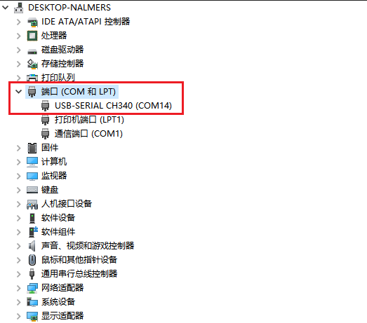</p><h3 data-lake-id="LQWma" id="LQWma"><span data-lake-id="u31ba11e8" id="u31ba11e8" style="color: rgb(51, 51, 51)">配置连接</span></h3><p data-lake-id="uf9e58b03" id="uf9e58b03"><span class="lake-fontsize-12" data-lake-id="u521c5da6" id="u521c5da6" style="color: rgb(51, 51, 51)">打开 MobaXterm 软件,点击图标 sessions 即可弹出 session setting，选择Serial</span></p><p data-lake-id="u7121ccbb" id="u7121ccbb"><span class="lake-fontsize-12" data-lake-id="uc4b83c0f" id="uc4b83c0f" style="color: rgb(51, 51, 51)">我们选择正确的串口，设置波特率为1500000，关闭流控<br><br/></br></span></p><p data-lake-id="u73d84841" id="u73d84841"></p><p data-lake-id="ub118ad46" id="ub118ad46"><span class="lake-fontsize-12" data-lake-id="u7e6e1cb1" id="u7e6e1cb1" style="color: rgb(51, 51, 51)">​</span><br/></p><h3 data-lake-id="skWKq" id="skWKq"><span data-lake-id="u08921d37" id="u08921d37" style="color: rgb(51, 51, 51)">查看开机信息</span></h3><p data-lake-id="u5022e464" id="u5022e464"><span class="lake-fontsize-12" data-lake-id="u4b04f92f" id="u4b04f92f" style="color: rgb(51, 51, 51)">把串口烧录工具接入电脑，另一端连接好泰山派（或者使用STC8核心板连接），即可看到打印开机信息</span></p><p data-lake-id="u7cd3ed4a" id="u7cd3ed4a">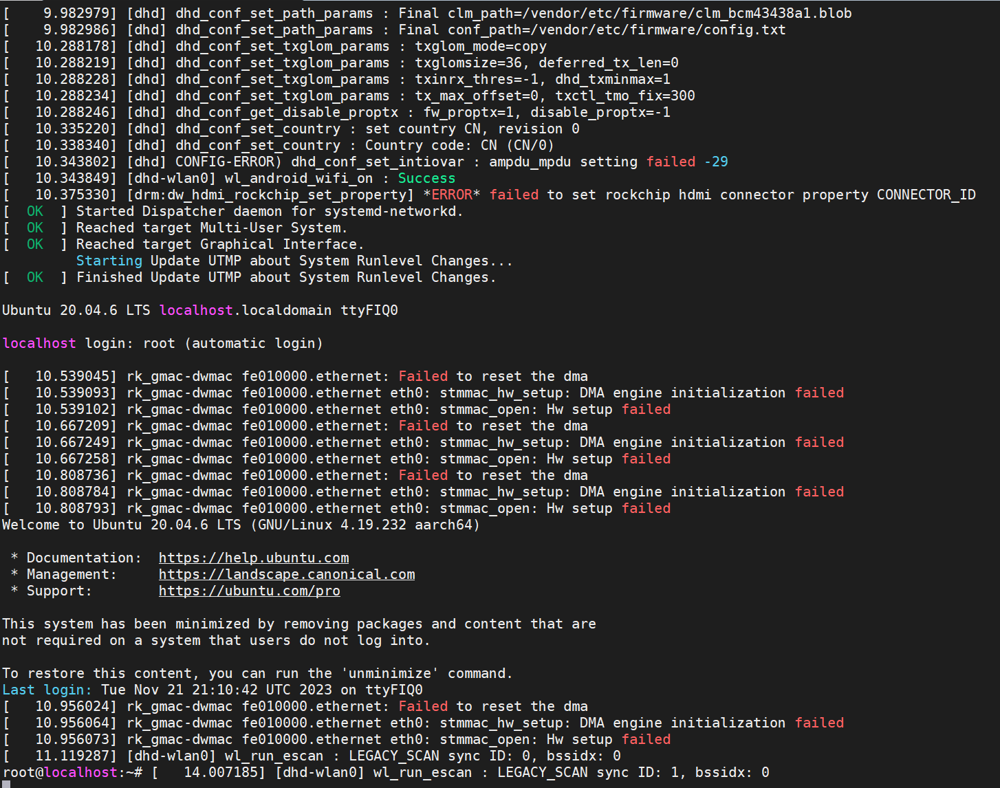</p><p data-lake-id="u6be4d783" id="u6be4d783"><br/></p><p data-lake-id="ucc116630" id="ucc116630"><span data-lake-id="u8dcc267a" id="u8dcc267a">linux系统启动成功示意图</span></p><p data-lake-id="ub0bd3737" id="ub0bd3737">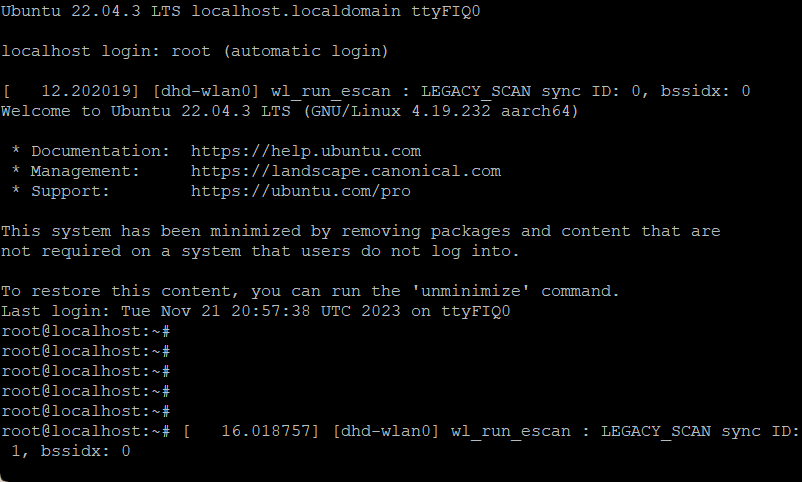</p><h1 data-lake-id="ggrzJ" id="ggrzJ"><span data-lake-id="ue2c2e91e" id="ue2c2e91e" style="color: rgb(51, 51, 51)">SSH连接</span></h1><p data-lake-id="u2bdedf9f" id="u2bdedf9f"><span class="lake-fontsize-12" data-lake-id="u5ef89fde" id="u5ef89fde" style="color: rgb(51, 51, 51)">	泰山派提供了WiFi模块，所以也可以SSH方式连接泰山派，但是需要让windows电脑和泰山派处于同一个网络内。可以使用路由器作为中转（让电脑和泰山派接入路由器） ，或者使用手机热点中转（让电脑和泰山派都接入手机的热点）。</span></p><h2 data-lake-id="KIH25" id="KIH25"><span data-lake-id="u3aea8989" id="u3aea8989" style="color: rgb(51, 51, 51)">泰山派连接WiFi</span></h2><ol list="u8e0de347"><li data-lake-id="u4bf372ec" fid="u4ebc55f2" id="u4bf372ec"><span class="lake-fontsize-12" data-lake-id="ua2987d18" id="ua2987d18" style="color: rgb(51, 51, 51)">终端输入命令： </span><span class="lake-fontsize-12" data-lake-id="u3c09f0d9" id="u3c09f0d9" style="color: rgb(51, 51, 51); background-color: rgb(243, 244, 244)">nmtui</span></li><li data-lake-id="u27d88342" fid="u4ebc55f2" id="u27d88342"><span class="lake-fontsize-12" data-lake-id="uf0cabc3a" id="uf0cabc3a" style="color: rgb(51, 51, 51)">弹出的窗口通过方向上下键选择： </span><span class="lake-fontsize-12" data-lake-id="u80b8e341" id="u80b8e341" style="color: rgb(51, 51, 51); background-color: rgb(243, 244, 244)">Activate a connection</span><span class="lake-fontsize-12" data-lake-id="ua91848de" id="ua91848de" style="color: rgb(51, 51, 51)">, 然后回车</span></li></ol><p data-lake-id="u847c174c" id="u847c174c">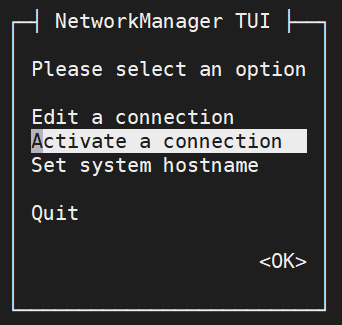</p><ol list="u8e0de347" start="3"><li data-lake-id="u71ffcff8" fid="u4ebc55f2" id="u71ffcff8"><span class="lake-fontsize-12" data-lake-id="u289c77b0" id="u289c77b0" style="color: rgb(51, 51, 51)">然后通过方向上下键选择具体的WIFI， 然后回车</span></li></ol><p data-lake-id="u7f39456c" id="u7f39456c">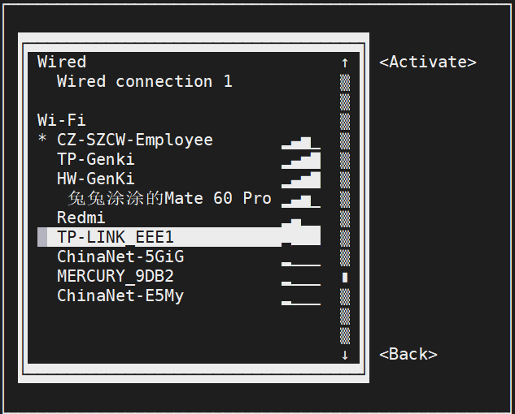</p><ol list="u8e0de347" start="4"><li data-lake-id="ub3ce9d5f" fid="u4ebc55f2" id="ub3ce9d5f"><span class="lake-fontsize-12" data-lake-id="u13836021" id="u13836021" style="color: rgb(51, 51, 51)">输入密码回车即可 ， 若是需要退出连接设置，则只需要连续点击 </span><span class="lake-fontsize-12" data-lake-id="u53ecce58" id="u53ecce58" style="color: rgb(51, 51, 51); background-color: rgb(243, 244, 244)">ESC</span><span class="lake-fontsize-12" data-lake-id="u7206aa44" id="u7206aa44" style="color: rgb(51, 51, 51)"> 键 即可回到终端。</span></li><li data-lake-id="u159ccd85" fid="u4ebc55f2" id="u159ccd85"><span class="lake-fontsize-12" data-lake-id="u9ab9f08f" id="u9ab9f08f" style="color: rgb(51, 51, 51)">连接上WIFI之后，使用ifconfig查看泰山派分配到的IP地址</span></li></ol><p data-lake-id="u375eb16b" id="u375eb16b">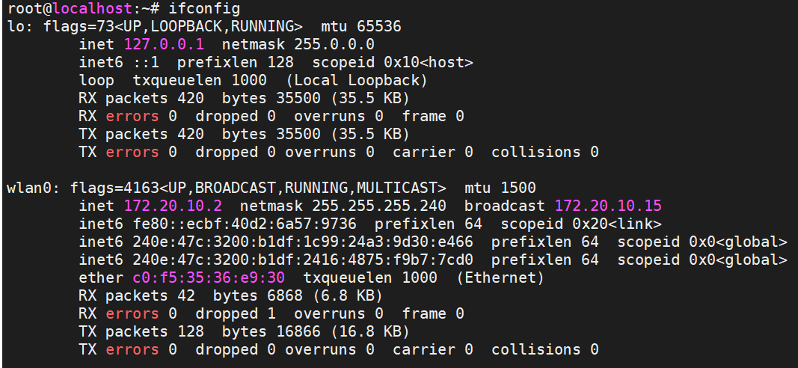</p><p data-lake-id="ud8e3452a" id="ud8e3452a"><span class="lake-fontsize-12" data-lake-id="u2a13f3cd" id="u2a13f3cd" style="color: rgb(51, 51, 51)">​</span><br/></p><ol list="u8e0de347" start="6"><li data-lake-id="u355d54f8" fid="u4ebc55f2" id="u355d54f8"><span class="lake-fontsize-12" data-lake-id="u1db02bdc" id="u1db02bdc" style="color: rgb(51, 51, 51)">连接上WIFI了之后，安装ssh服务 </span><span class="lake-fontsize-12" data-lake-id="u3c83d78b" id="u3c83d78b" style="color: #DF2A3F">【</span><strong><span class="lake-fontsize-12" data-lake-id="u40ff66c1" id="u40ff66c1" style="color: #DF2A3F">给大家的镜像里面已经安装好了，可以跳过此步骤</span></strong><span class="lake-fontsize-12" data-lake-id="u6edc15e8" id="u6edc15e8" style="color: #DF2A3F">】</span></li></ol><blockquote data-lake-id="u86bf1e6c" id="u86bf1e6c"><p data-lake-id="u76c4b560" id="u76c4b560"><span data-lake-id="u00023987" id="u00023987">apt install openssh-server</span></p></blockquote><ol list="u4da1c08f" start="7"><li data-lake-id="ud3b41b99" fid="u03a42479" id="ud3b41b99"><span class="lake-fontsize-12" data-lake-id="uee830391" id="uee830391" style="color: rgb(51, 51, 51)">打开MobaXterm，输入ip地址: </span><span class="lake-fontsize-12" data-lake-id="u92c48d7d" id="u92c48d7d" style="color: rgb(51, 51, 51); background-color: rgb(243, 244, 244)">172.20.10.2</span><span class="lake-fontsize-12" data-lake-id="u71d132de" id="u71d132de" style="color: rgb(51, 51, 51)">  (你被分配的ip地址) 端口： </span><span class="lake-fontsize-12" data-lake-id="ufc7e584c" id="ufc7e584c" style="color: rgb(51, 51, 51); background-color: rgb(243, 244, 244)">22</span><span class="lake-fontsize-12" data-lake-id="u8c1f3dea" id="u8c1f3dea" style="color: rgb(51, 51, 51)">，用户名： </span><span class="lake-fontsize-12" data-lake-id="ubee2a2e9" id="ubee2a2e9" style="color: rgb(51, 51, 51); background-color: rgb(243, 244, 244)">icheima</span><span class="lake-fontsize-12" data-lake-id="uc34adf28" id="uc34adf28" style="color: rgb(51, 51, 51)"> , 密码 : </span><span class="lake-fontsize-12" data-lake-id="ufbcc03ea" id="ufbcc03ea" style="color: rgb(51, 51, 51); background-color: rgb(243, 244, 244)">icheima</span><span class="lake-fontsize-12" data-lake-id="u1fd8f30b" id="u1fd8f30b" style="color: rgb(51, 51, 51)"> 即可连接上泰山派了</span></li></ol><p data-lake-id="u38203c80" id="u38203c80"><span data-lake-id="u2853aed9" id="u2853aed9">​</span><br/></p><p data-lake-id="ufb5ab0ce" id="ufb5ab0ce"><span data-lake-id="u8b98f0b6" id="u8b98f0b6">​</span><br/></p><h2 data-lake-id="Mzxmf" id="Mzxmf"><span data-lake-id="u1e17e9a0" id="u1e17e9a0" style="color: rgb(51, 51, 51)">USB共享网络</span></h2><p data-lake-id="ua16c46de" id="ua16c46de"><span class="lake-fontsize-12" data-lake-id="u719595f4" id="u719595f4" style="color: rgb(51, 51, 51)">	使用WIFI实现SSH连接，存在一个弊端，就是网络连接慢的问题，有时候在远程连接工具已经执行了命令，但是却莫名其妙的需要等待一会才会出现效果。此时可以采用windows电脑通过USB共享网络给泰山派，这种方式连接的速度更快一些。具体操作步骤如下：</span></p><p data-lake-id="uc96c8950" id="uc96c8950"><span class="lake-fontsize-12" data-lake-id="u302438da" id="u302438da" style="color: rgb(51, 51, 51)">​</span><br/></p><h3 data-lake-id="rknym" id="rknym"><span data-lake-id="ucac8b386" id="ucac8b386" style="color: rgb(51, 51, 51)">windows操作</span></h3><ol list="u23dd65ae"><li data-lake-id="u8923a3e7" fid="u81ed1d12" id="u8923a3e7"><span class="lake-fontsize-12" data-lake-id="u2b47e8c1" id="u2b47e8c1" style="color: rgb(51, 51, 51)">windows电脑启用Internet连接共享</span></li></ol><span class="yuque-card-unsupported">[codeblock]</span><p data-lake-id="ua1ce0d0a" id="ua1ce0d0a"><strong><span class="lake-fontsize-12" data-lake-id="ue6a38127" id="ue6a38127" style="color: rgb(119, 119, 119)">打开 : 控制面板\网络和共享中心\更改适配器选项</span></strong></p><p data-lake-id="u3ba2a4a1" id="u3ba2a4a1">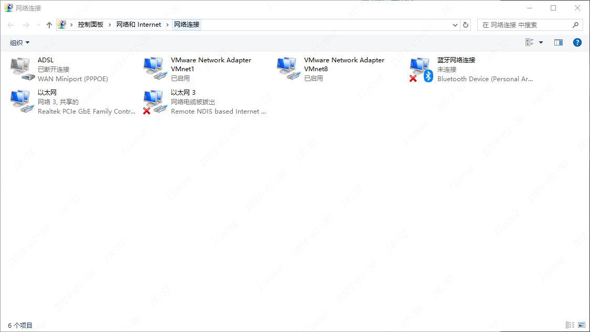</p><p data-lake-id="u39bce6f6" id="u39bce6f6"><br/></p><ol list="u8b55a329" start="2"><li data-lake-id="ue4bea12b" fid="u2b036a23" id="ue4bea12b"><span class="lake-fontsize-12" data-lake-id="u436ac6a7" id="u436ac6a7" style="color: rgb(51, 51, 51)">把自己电脑的以太网（物理网卡）的网络共享给RNDIS网络</span></li></ol><p data-lake-id="u2131e0af" id="u2131e0af"><span class="lake-fontsize-12" data-lake-id="uba50ba48" id="uba50ba48" style="color: #DF2A3F">备注：哪个网卡能上网，就将哪个网卡共享给泰山派</span></p><p data-lake-id="ud1880c88" id="ud1880c88"><span class="lake-fontsize-12" data-lake-id="u170eff84" id="u170eff84" style="color: rgb(51, 51, 51)">RNDIS网络是让</span><span class="lake-fontsize-12" data-lake-id="u361d2381" id="u361d2381" style="color: rgba(0, 0, 0, 0.9); background-color: rgb(252, 252, 252)">智能手机、嵌入式设备能够通过USB线缆与计算机建立网络连接，</span></p><p data-lake-id="ufdae336b" id="ufdae336b"><span class="lake-fontsize-12" data-lake-id="u00beecfe" id="u00beecfe" style="color: rgba(0, 0, 0, 0.9); background-color: rgb(252, 252, 252)">无需传统的网卡或Wi-Fi</span></p><p data-lake-id="u895168b6" id="u895168b6">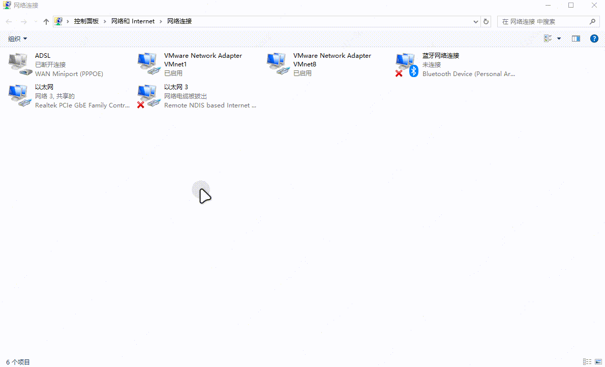</p><h3 data-lake-id="wSApc" id="wSApc"><span data-lake-id="u01f97d44" id="u01f97d44" style="color: rgb(51, 51, 51)">泰山派操作</span></h3><ol list="u8f806321"><li data-lake-id="u679bdbf2" fid="u64f3b05a" id="u679bdbf2"><span class="lake-fontsize-12" data-lake-id="u2a4b3f2a" id="u2a4b3f2a" style="color: rgb(51, 51, 51)">在终端（或者在MobaXterm） 里面执行命令： </span><strong><span class="lake-fontsize-12" data-lake-id="uc0d2bf67" id="uc0d2bf67" style="color: rgb(51, 51, 51)">ifconfig -a</span></strong></li></ol><p data-lake-id="ub1042620" id="ub1042620"><strong><span class="lake-fontsize-12" data-lake-id="u91d75641" id="u91d75641" style="color: rgb(51, 51, 51)">​</span></strong><br/></p><p data-lake-id="ua55181ea" id="ua55181ea">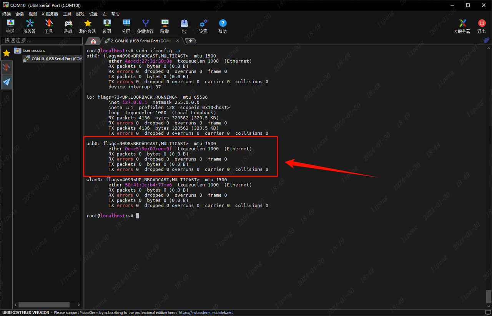</p><ol list="u8f806321" start="2"><li data-lake-id="u634f5af3" fid="u64f3b05a" id="u634f5af3"><span class="lake-fontsize-12" data-lake-id="u2f588dba" id="u2f588dba" style="color: rgb(51, 51, 51)">执行命令：  自动获取ip地址</span></li></ol><span class="yuque-card-unsupported">[codeblock]</span><p data-lake-id="ub7c2f272" id="ub7c2f272"><span class="lake-fontsize-12" data-lake-id="u64d9d742" id="u64d9d742" style="color: rgb(51, 51, 51)">正常执行完毕如下，如果一直卡在这里执行不过去（通常8s以内即可），可以考虑更换连接设备的USB数据线</span></p><p data-lake-id="ue19488d7" id="ue19488d7">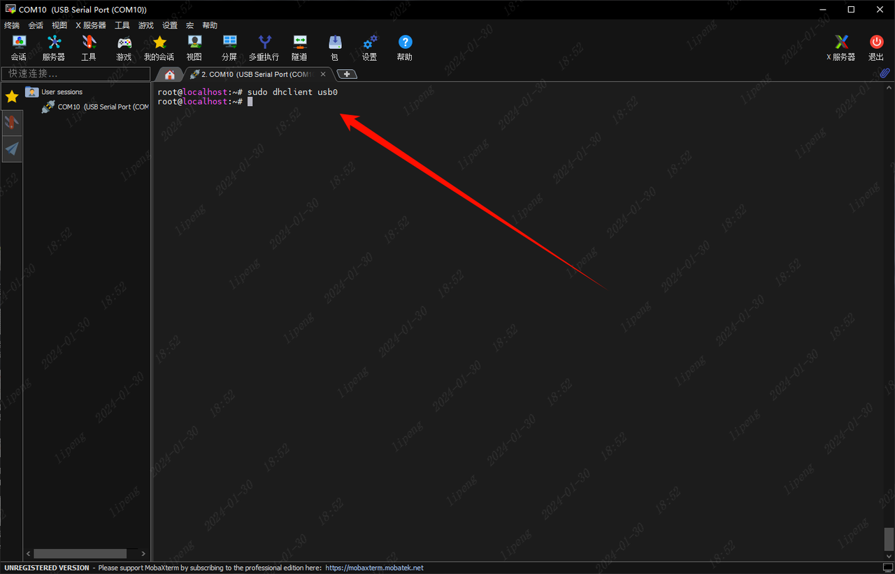</p><ol list="u8f806321" start="3"><li data-lake-id="uf87e6d3f" fid="u64f3b05a" id="uf87e6d3f"><span class="lake-fontsize-12" data-lake-id="uaa0aeef4" id="uaa0aeef4" style="color: rgb(51, 51, 51)">再次执行 </span><strong><span class="lake-fontsize-12" data-lake-id="u5681839f" id="u5681839f" style="color: rgb(51, 51, 51)">ifconfig</span></strong><span class="lake-fontsize-12" data-lake-id="ue8c344a2" id="ue8c344a2" style="color: rgb(51, 51, 51)"> 查看是否有获取到ip地址</span></li></ol><p data-lake-id="u67d1b593" id="u67d1b593">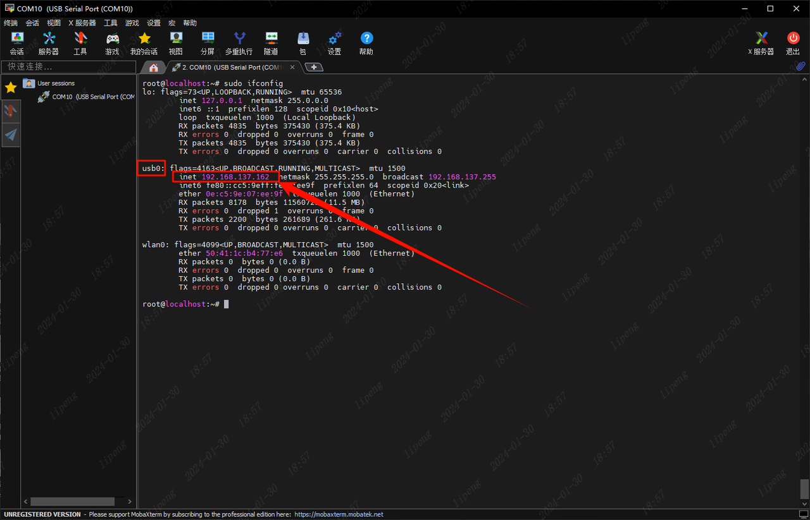</p><p data-lake-id="u666ecc51" id="u666ecc51"><span class="lake-fontsize-12" data-lake-id="u4e042663" id="u4e042663" style="color: rgb(51, 51, 51)">​</span><br/></p><ol list="u8f806321" start="4"><li data-lake-id="ueb1f5602" fid="u64f3b05a" id="ueb1f5602"><span class="lake-fontsize-12" data-lake-id="ub536112e" id="ub536112e" style="color: rgb(51, 51, 51)">拿到ip地址之后，就可以使用ssh连接方式来连接泰山派了。</span></li></ol><p data-lake-id="u00eb7a63" id="u00eb7a63"><span data-lake-id="u404eb99d" id="u404eb99d">​</span><br/></p><p data-lake-id="u2165a38f" id="u2165a38f"><span data-lake-id="u6be9e1e0" id="u6be9e1e0">​</span><br/></p><blockquote class="lake-alert lake-alert-color3" data-lake-id="u9ff390ea" id="u9ff390ea"><p data-lake-id="ubfbbdc79" id="ubfbbdc79"><span data-lake-id="u541e16a6" id="u541e16a6">小技巧：Windows控制台里，可以使用</span><code data-lake-id="u86fcaab2" id="u86fcaab2"><span data-lake-id="u6040ec47" id="u6040ec47">arp -a</span></code><span data-lake-id="u943618bf" id="u943618bf">命令查看局域网其他设备ip</span></p></blockquote><p data-lake-id="u1dc807b7" id="u1dc807b7"><br/></p><p data-lake-id="u2be840bf" id="u2be840bf"><br/></p><h1 data-lake-id="KnOnf" id="KnOnf"><span data-lake-id="u0caad32b" id="u0caad32b">其他</span></h1><p data-lake-id="u6271e6a1" id="u6271e6a1"><span data-lake-id="ua441437b" id="ua441437b">如果使用sudo dhclient usb0无法获取到ip，可使用如下方法手动分配ip</span></p><span class="yuque-card-unsupported">[codeblock]</span><p data-lake-id="udf90b69a" id="udf90b69a"><span data-lake-id="u8c3e86fe" id="u8c3e86fe">如果想清理掉：</span></p><span class="yuque-card-unsupported">[codeblock]</span><p data-lake-id="u4775a369" id="u4775a369"><span data-lake-id="u9f01a9e8" id="u9f01a9e8">这里的usb0即为网卡名称</span></p><p data-lake-id="u3d0140d8" id="u3d0140d8"><span data-lake-id="u58828316" id="u58828316">​</span><br/></p><p data-lake-id="u6a8723d0" id="u6a8723d0"><span data-lake-id="ud78c5bff" id="ud78c5bff">​</span><br/></p><h3 data-lake-id="tbqOA" id="tbqOA"><span data-lake-id="u27333c8d" id="u27333c8d">设置密码</span></h3><span class="yuque-card-unsupported">[codeblock]</span><p data-lake-id="u77a24db3" id="u77a24db3"><span data-lake-id="u85b208ec" id="u85b208ec">首先允许root登录</span></p><p data-lake-id="ufd6a35ba" id="ufd6a35ba">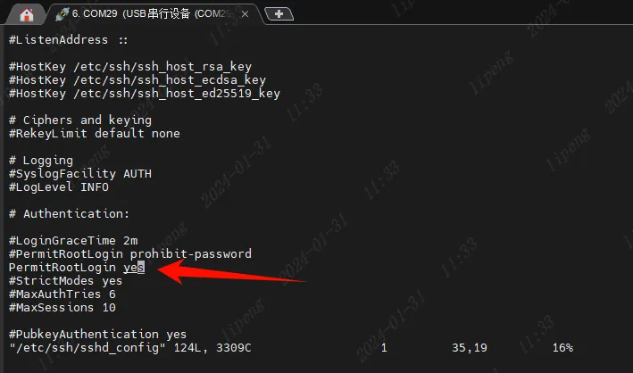</p><p data-lake-id="u9e729cb8" id="u9e729cb8"><br/></p><p data-lake-id="ufebf1abf" id="ufebf1abf"><span data-lake-id="u00b6d389" id="u00b6d389">设置密码</span></p><span class="yuque-card-unsupported">[codeblock]</span><p data-lake-id="u26ca63a1" id="u26ca63a1">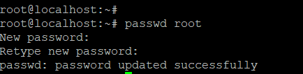</p><p data-lake-id="ue413ac89" id="ue413ac89"><span data-lake-id="u2a21bfa2" id="u2a21bfa2">重启ssh服务</span></p><span class="yuque-card-unsupported">[codeblock]</span><p data-lake-id="u9964e262" id="u9964e262"></p><p data-lake-id="u573225ba" id="u573225ba"><br/></p><p data-lake-id="u7e9b1d9c" id="u7e9b1d9c"><br/></p><p data-lake-id="uc3bb9444" id="uc3bb9444"><span data-lake-id="ue230209d" id="ue230209d">删除默认路由</span></p><span class="yuque-card-unsupported">[codeblock]</span><p data-lake-id="ue9edba53" id="ue9edba53"><br/></p><p data-lake-id="ue669b791" id="ue669b791"><br/></p>